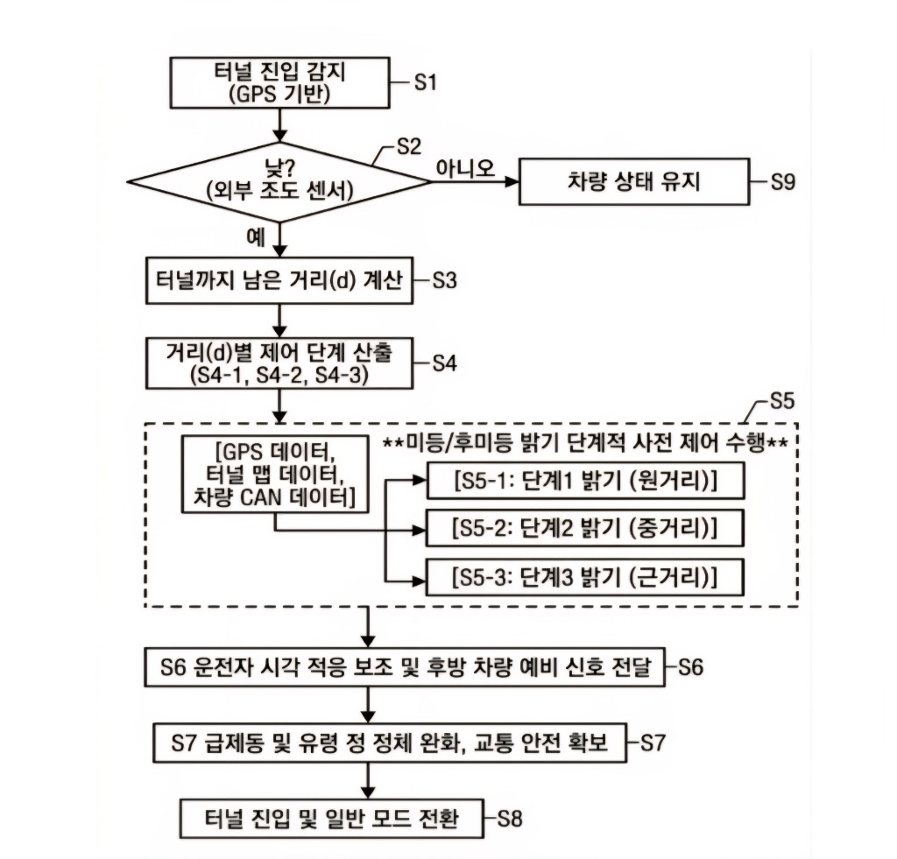
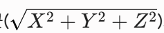
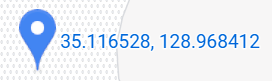
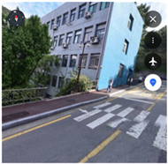
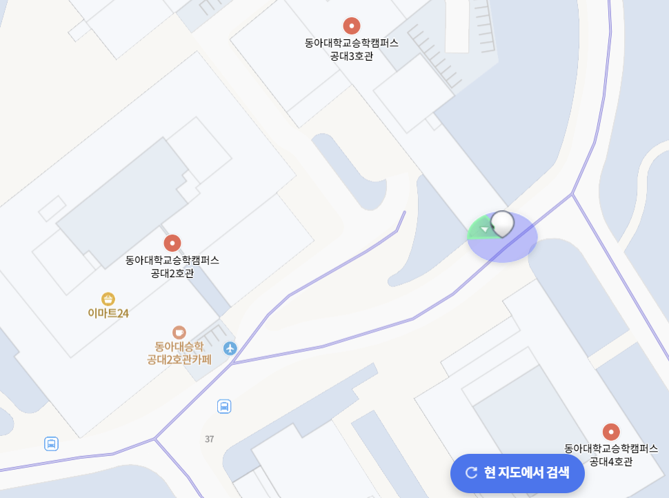
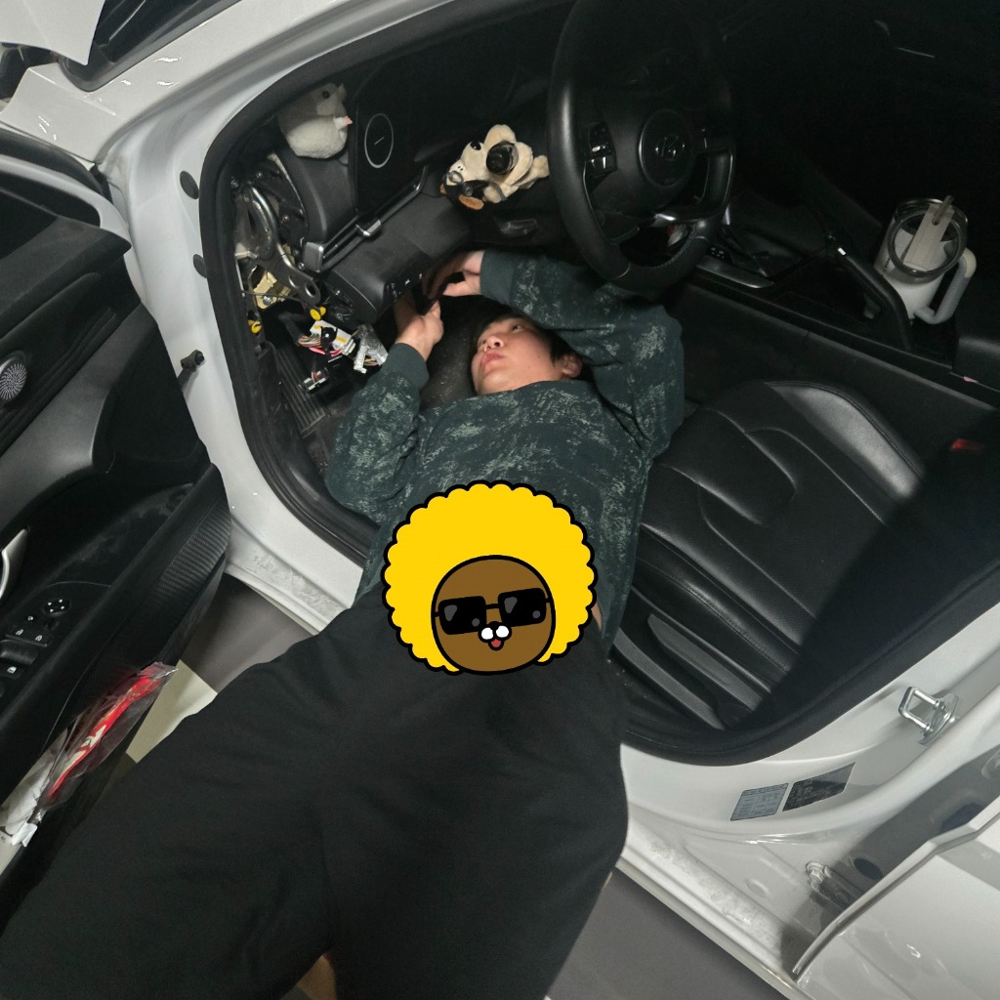

주요 부품 및 소자 구성
| 부품명 | 선정 모델 | 핵심 기술 및 발표 설명 |
|---|---|---|
| 조도 센서 | BH1750 (I2C) | 야간 주행 상태 검출 및 채터링 방지 듀얼 기준 조도 측정 |
| 전원 변환기 | Buck Converter | 차량용 12V 전압을 5V로 강압하여 MCU에 안정적인 전원 공급 |
| GPS 모듈 | NEO-M8N | 터널 위치 감지용 위성 데이터 수집 및 차선급 정밀 탐색 |
| 메인 MCU | ESP32 devkit v4 | 센서 데이터 고속 병렬 연산 및 다채널 PWM 신호 송출 제어 |
| 게이트 드라이버 | TC4427 Gate Driver | 고주파 5kHz PWM 신호 변환 및 MOSFET 고속 스위칭 드라이버 구동 |
| 가속도 자이로 센서 | MPU6050 | 차량의 실제 움직임 판별 및 센서 퓨전 노이즈 보정용 데이터 획득 |

MPU6050

Buck Converter

NEO-M8N GPS

ESP32 devkit

TC4427 Gate Driver

BH1750 조도
시스템 하드웨어 회로도 및 제어 흐름도
📸 시스템 제어 로직 흐름도 (Flowchart)

📸 시스템 결선 회로도 (Matte Black 4-Layer PCB 설계)

발전 과정: 1. GPS 단독 적용의 한계
❌ 정지 시 위치 드리프트 발생
위성 수 6개 기준 수신 환경에서 정지 상태일 때도 좌표가 계속 미세하게 변형되어 움직이는 것으로 오인하는 드리프트 현상 발생.
📊 측정 오차 분포
- 그린필드 기준 정지 상태: 5m 내외의 원형 오차
- 주행 이동 상태: 수신 불안정 시 최대 20m 이상의 궤적 튐
- 실내 테스트 시 위성수 부족으로 GPS 수신 차단
📸 정지 시 GPS 데이터 드리프트 (위성 수 6개)

발전 과정: 2. GPS + 자이로/가속도 센서 퓨전
1) 가속도 정적 오프셋(보정치) 적용
자이로/가속도 센서 자체의 정적 제조 오차가 상시 주행 신호로 잡혀 오독함.
- 정지 상태에서 데이터 평균 수집 ➔ Calibration 오프셋 상수 도출
- BIAS_X(2.47), BIAS_Y(-1.53), BIAS_Z(1.19)를 적용하여 정지 시 영점 보정
2) 주행 상태 필터링 (Motion Filter)
중력가속도를 제외한 차량의 실제 움직임 크기(motionMag)를 기하학적으로 연산.
- 합성 수식: $\sqrt{X^2 + Y^2 + Z^2}$ 결과에서 중력(9.8) 상쇄
- 임계값(0.6) 이상 진동 시에만 '주행 중(isMoving=true)'으로 판정
- 정지 시 GPS 신호 무시 및 10차 이동평균 필터 갱신 차단

물리 가속도 합성 공식📸 보정 전 가속도 데이터 (진동 노이즈)

📸 보정 후 가속도 / 자이로 데이터 (안정화)

가상 실험 환경 및 최종 구현 상태
📍 **실험 및 시연 타겟 구역**: 부산 대티터널 가상 시작점 좌표 (위도 35.116528, 경도 128.968412)로 설정하여 실험 주행 진행.
🎥 실차 시뮬레이션 시연 (부산 대티터널 부근 실차 주행)
📹
demo.mp4 로드 실패
🗺️ Naver 지도 가상 경로 및 정보


📍 가상 터널 진입 위치


CAN 통신 제어 시도 및 분석
1) B-CAN (Body CAN) 제어 원리
바디 전장 시스템(미등/헤드라이트, 도어록, 와이퍼 등)을 제어하기 위한 차량 내 통신 규격.
- 꼬임선(Twisted Pair: CAN_High, CAN_Low) 구조
- 노이즈 방지를 위해 차동 전압(Differential Voltage) 사용
2) SGW (보안 게이트웨이) 방화벽의 한계
테스트 차량인 아반떼 CN7 22년식 기준, OBD2 포트를 통한 패킷 주입 실패.
- 차량 보안(해킹 방지)을 위해 보안 게이트웨이(SGW) 방화벽 탑재
- 진단 도구 접속 시 신호 필터링 차단
📸 B-CAN 대기 전압 (2.56V)

📸 B-CAN 구동 전압 (2.49V)

CAN 통신 제어 실험 성공 및 한계 극복
SGW 방화벽을 우회하기 위해 정션박스 후면의 B-CAN 직접 T-tap 배선 접촉을 시도하여 통신 수신에 성공하였습니다.
T-tap 수신 및 데이터 필터링
- 정션박스 다이렉트 탭을 통해 총 33개의 활성 CAN ID 수신
- 라이트 레버 조작 시 변동 데이터 추적 ➔ ID 0x168 변동 감지
- 미등 OFF: 0x01 (이진수: 0000 0001) / 미등 ON: 0x89 (이진수: 1000 1001)
명령 주입 충돌 및 ICU 에러 처리
- 순정 BCM이 주간에 10~20ms 주기로 '미등 OFF' 패킷 전송 중
- ESP32 모듈이 5ms 간격으로 '미등 ON' 패킷을 주입
- 비트 충돌로 전압 감쇄 발생 ➔ ICU가 Bit Error(통신 에러)로 판정하여 보호 모드 전환
📸 정션박스 T-tap 결선
정션박스 후면 B-CAN 배선에 직접 T-tap 클립 커넥터를 체결하여 SGW 방화벽 우회 수신

📸 B-CAN 데이터 스트림
0x168 ID를 포함한 총 33개의 수신 패킷 모니터링 로그 화면

📸 정션박스 작업 사진
차량 운전석 하단 정션박스 접근 및 B-CAN 제어 모듈 배선 작업 진행
